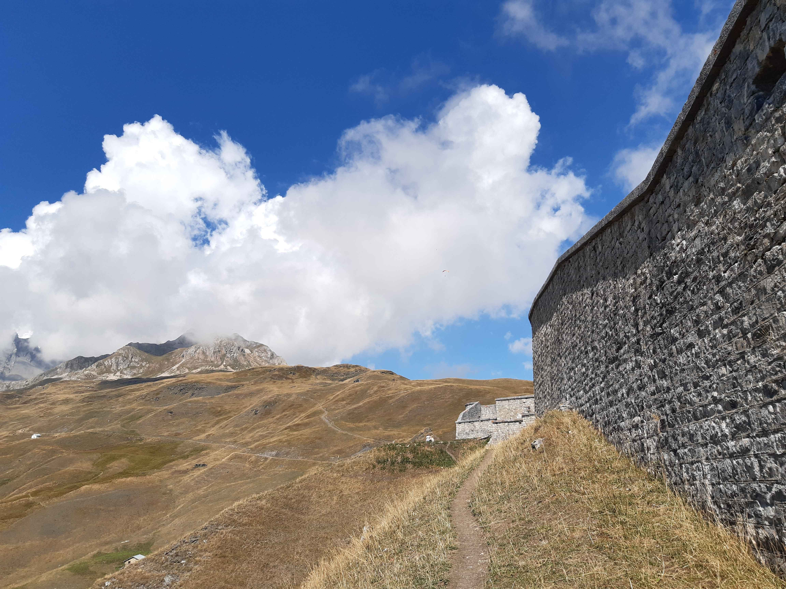
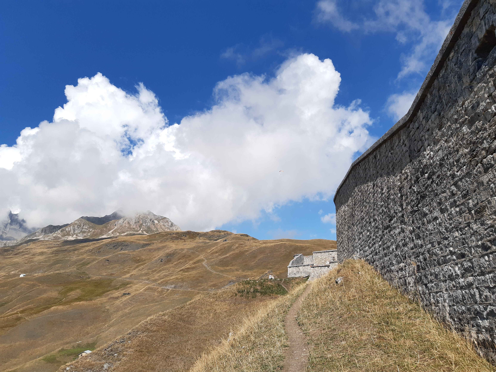

Retour
Massif du Beaufortain
Forts du Truc et de la Platte
- Type : aller-retour
- Description de l'itinéraire : Bourg Saint-Maurice - la Rosière - le grand Replat - Fort du Truc - Fort de la Platte
- Distance : 10 km
- Dénivelé positif : 1200 m
- Point le plus bas : 834 m
- Point le plus haut : 1975 m
- Cotation en l'absence de neige : T2
- Intérêt : 2/5
- Date : 27/8/2022
- Photos :
 La vallée de l'Isère  Le fort de la Platte
La vallée de l'Isère  Le fort de la Platte